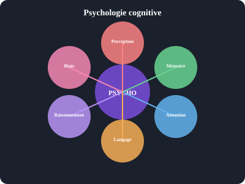

Psychologie cognitive
Psychologie cognitive
La psychologie cognitive étudie les processus mentaux : perception, attention, mémoire, langage, raisonnement et prise de décision.


La perception est-elle juste une expérience ?
Non. La perception est un processus actif de construction. Le cerveau ne reproduit pas fidèlement le monde : il l'interprète à partir d'indices sensoriels incomplets.
- Illusions visuelles : Le vase de Rubin, les lignes de Müller-Lyer démontrent que voir ≠ enregistrer.
- Théorie de l'attribution : Nous interprétons les causes des comportements (internes vs externes).
- Perception sélective : L'expérience « gorille invisible » (Simons & Chabris, 1999) montre que l'attention filtre massivement l'information.
Comment le cerveau construit-il la mémoire ?
La mémoire n'est pas une vidéo. C'est un processus reconstructif impliquant plusieurs systèmes :
| Système | Durée | Capacité | Exemple |
|---|---|---|---|
| Mémoire sensorielle | < 1 seconde | Très grande | Écho iconique (visuel) |
| Mémoire à court terme | 15–30 secondes | 7±2 items | Numéro de téléphone |
| Mémoire de travail | Active | Limitée | Résoudre un calcul mental |
| Mémoire à long terme | Illimitée | Quasi-illimitée | Souvenirs d'enfance |
Peut-on compter sur votre témoignage ?
Les recherches d'Elizabeth Loftus démontrent que la mémoire est suggestible. Des études montrent que 25 à 50 % des sujets peuvent « se souvenir » d'événements fictifs après suggestion.
Effet de désinformation : Une information post-événement altère le souvenir original. Implications majeures pour la justice.
Le raccourci est-il la voie du danger ?
Les heuristiques (raccourcis mentaux) permettent des décisions rapides mais engendrent des biais :
- Heuristique de disponibilité : Juger la probabilité par la facilité de rappel (ex. peur de l'avion vs voiture).
- Heuristique de représentativité : Ignorer les statistiques de base (problème de Linda).
- Ancrage : Première information influence les jugements suivants.
- Biais de confirmation : Chercher ce qui confirme nos croyances.